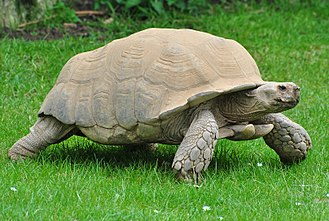

The African spurred tortoise (Centrochelys sulcata), also called the sulcata tortoise, is a species of tortoise, which inhabits the southern edge of the Sahara desert, in Africa. It is the third-largest species of tortoise in the world, the largest species of mainland tortoise, and the only extant species in the genus
